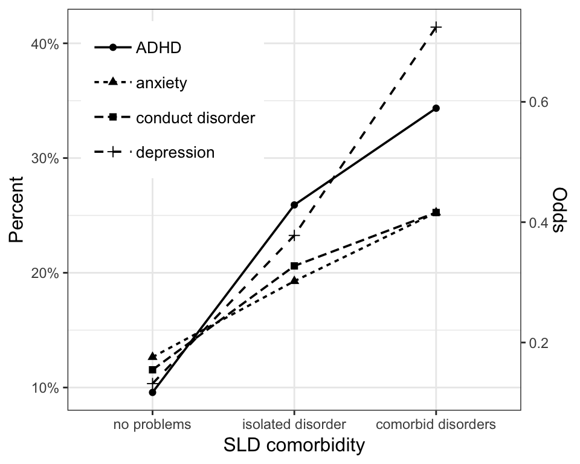

comsldpsy.RmdThis research compendium comprises all the input and output files as well as the R code needed to reproduce our paper:
Visser, L., Kalmar, J., Görgen, R., Linkersdörfer, J., Rothe, J., Hasselhorn, M., & Schulte-Körne, G. (submitted). Comorbidities between specific learning disorders and psychopathology: a study with elementary school children in Germany.
The compendium uses the R package drake to define a reproducible processing pipeline linking inputs to outputs/targets similar to GNU make (for more information on the drake package, see here). This vignette describes how to reproduce the analysis, check the analysis pipeline, and inspect analysis steps and outputs.
library(comsldpsy)
#> Loading required package: drake
#> Attaching package: 'comsldpsy'
#>
#> The package provides data and analysis code for our paper
#> Visser, L., Kalmar, J., Görgen, R., Linkersdörfer, J., Rothe, J., Hasselhorn, M., & Schulte-Körne, G. (submitted). Comorbidities between specific learning disorders and psychopathology: a study with elementary school children in Germany.
#>
#> To reproduce the analysis, run `reproduce_analysis()`
copy_analysis()
#> Copying analysis directory structure...After attaching the package, executing the function copy_analysis() copies the analysis directory structure to the current working directory (or an explicitely specified directory). The directory should now contain the following files:
.
└── .drake
└── [...]
└── analysis
├── data
│ └── data_orig.rds # raw data
├── manuscript
│ └── manuscript.docx # manuscript as submitted
└── templates
└── manuscript_template.docx # manuscript templateThese files represent all input files required to reproduce the analysis as well as all output files generated in the process. The function further copies a .drake directory to the same directory. This hidden directory stores information about the consistency of the analysis pipeline and all intermediate outputs.
Reproducing the analysis can be done in a two-step procedure:
Executing the function reproduce_analysis() copies the analysis directory structure (if it isn’t already present) and then runs drake::make(). The output provides evidence of reproducibility without actually re-running the analysis. If the analysis is reproducible, the output should look like this:
To independently re-create the analysis results on ones own computer, one can run reproduce_analysis() with the option re_run = TRUE. This will delete the copied .drake folder and re-run the entire analysis from scratch, re-creating all relevant intermediate steps and outputs.
reproduce_analysis(re_run = TRUE)
#> Reproducing analysis included in package 'comsldpsy':
#> Analysis directory structure is already in place.
#> Re-running analysis from scratch...
#> target data_raw
#> target manuscript_in
#> target data_transformed
#> target data_filtered
#> [...]
#> target manuscript_text
#> target manuscript_tables
#> target manuscript_figures
#> target manuscript_outExecuting get_plan() returns the underlying drake plan used to run the analysis. The returned data frame lists all intermediate results (targets), the commands executed to create them, and the dependencies between them.
plan <- get_plan()
plan
#> # A tibble: 53 x 2
#> target command
#> <chr> <chr>
#> 1 data_raw "readRDS(file_in(\"analysis/data/data_orig.r…
#> 2 data_transformed transform_data(data_raw)
#> 3 data_filtered filter_data(data_transformed, get_filter_con…
#> 4 fisher_dsm5_cutoff_35_01… "fisher_test(x = \"dsm5_cutoff_35_01\", y = …
#> 5 fisher_dsm5_cutoff_35_01… "fisher_test(x = \"dsm5_cutoff_35_01\", y = …
#> 6 fisher_dsm5_cutoff_35_01… "fisher_test(x = \"dsm5_cutoff_35_01\", y = …
#> 7 fisher_dsm5_cutoff_35_01… "fisher_test(x = \"dsm5_cutoff_35_01\", y = …
#> 8 fisher_dsm5_cutoff_35_ma… "fisher_test(x = \"dsm5_cutoff_35_math\", y …
#> 9 fisher_dsm5_cutoff_35_ma… "fisher_test(x = \"dsm5_cutoff_35_math\", y …
#> 10 fisher_dsm5_cutoff_35_ma… "fisher_test(x = \"dsm5_cutoff_35_math\", y …
#> # ... with 43 more rowsThe drake package provides several ways to visualize the analysis pipeline, e.g.
Furthermore, drake provides functions for viewing individual targets (drake::readd()) or load them into the current environment (drake::loadd()).
For example, to view the cleaned data set, use:
readd(data_filtered)
#> # A tibble: 3,014 x 55
#> gender grade age land analyze cft_iq_own_kl cft_impl cody_t_own
#> <fct> <fct> <int> <fct> <dbl> <int> <fct> <int>
#> 1 female 4. K… 122 Hess… 1 115 no 59
#> 2 male 3. K… 108 Baye… 1 99 no 41
#> 3 female 4. K… 121 Baye… 1 107 no 54
#> 4 female 4. K… 121 Hess… 1 77 no 46
#> 5 male 3. K… 106 Baye… 1 99 no 49
#> 6 female 3. K… 111 Baye… 1 96 no 44
#> 7 male 3. K… 111 Baye… 1 99 no 48
#> 8 female 4. K… 122 Baye… 1 107 no 58
#> 9 female 4. K… 126 Hess… 1 95 no 40
#> 10 male 4. K… 121 Baye… 1 86 no 44
#> # ... with 3,004 more rows, and 47 more variables: cody_z_own <dbl>,
#> # cody_impl <fct>, wllp_t_own <int>, wllp_z_own <dbl>, wllp_impl <fct>,
#> # childs_complete <int>, anamn_1 <fct>, anamn_24 <fct>,
#> # sca_e_z_own <dbl>, des_z_own <dbl>, adhs_z_own <dbl>, ssv_z_own <dbl>,
#> # fbbssv_complete <int>, anamn_12_c___15 <fct>, anamn_23_icd___44 <fct>,
#> # anamn_23_icd___70 <fct>, anamn_23_icd___2 <fct>,
#> # anamn_23_icd___3 <fct>, anamn_23_icd___4 <fct>,
#> # anamn_23_icd___5 <fct>, anamn_23_icd___54 <fct>,
#> # anamn_23_icd___55 <fct>, anamn_23_icd___9 <fct>,
#> # anamn_23_icd___91 <fct>, anamn_23_icd___28 <fct>,
#> # anamn_23_icd___48 <fct>, anamn_23_icd___80 <fct>,
#> # anamn_23_icd___83 <fct>, anamn_23_icd___92 <fct>,
#> # anamn_23_icd___18 <fct>, wrt_t_own <dbl>, wrt_z_own <dbl>,
#> # wrt_impl <chr>, nationality <fct>, education_mother <fct>,
#> # dsm5_cutoff_35 <fct>, dsm5_cutoff_35_read <fct>,
#> # dsm5_cutoff_35_spell <fct>, dsm5_cutoff_35_math <fct>,
#> # dsm5_cutoff_35_01 <fct>, dsm5_cutoff_35_n <dbl>,
#> # dsm5_cutoff_35_012 <fct>, sca_e_z_cat <fct>, adhs_z_cat <fct>,
#> # des_z_cat <fct>, ssv_z_cat <fct>, psychopaths_n <dbl>to view the results of the poisson regression model, use:
readd(df_poisson)
#> # A tibble: 2 x 5
#> term p.value estimate conf.low conf.high
#> <chr> <dbl> <dbl> <dbl> <dbl>
#> 1 (Intercept) 2.32e-138 0.454 0.427 0.483
#> 2 dsm5_cutoff_35_n 2.20e- 43 1.66 1.55 1.79or, to view one of the figures included in the paper, use:

Executing delete_analysis() removes the analysis and .drake directories from the working directory (or an explicitely specified directory).